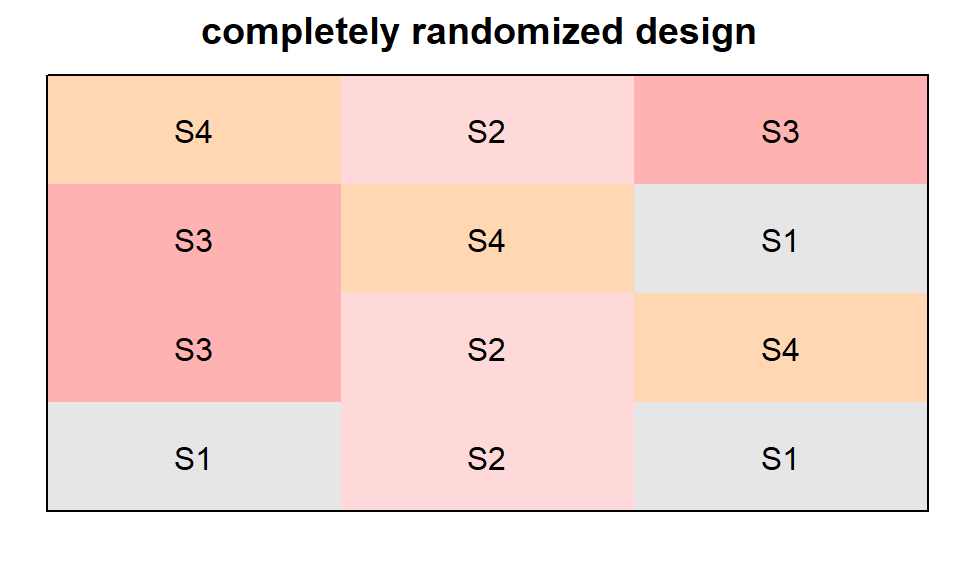
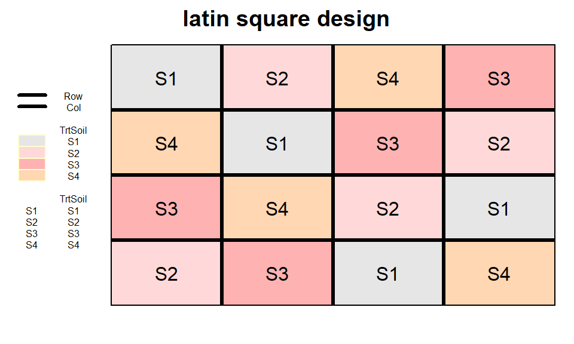
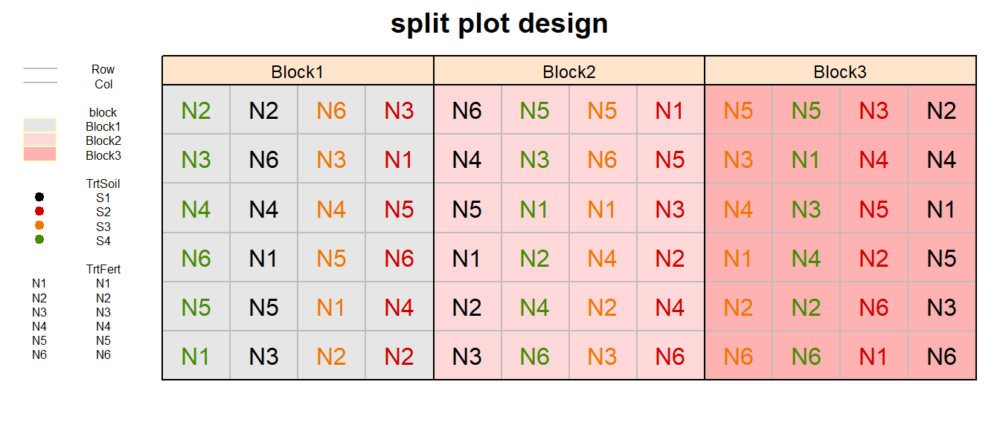

Designing experiments
# packages
pacman::p_load(tidyverse, # data handling
agricolae, # experimental design
ggplot2, desplot) # plotsExample Setup
# 2 pesiticides
TrtPest <- paste0("P", 1:2) # P1 & P2
n_TrtPest <- n_distinct(TrtPest) # 2
# 4 soil treatments
TrtSoil <- paste0("S", 1:4) # S1 - S4
n_TrtSoil <- n_distinct(TrtSoil) # 4
# 6 fertilizer
TrtFert <- paste0("N", 1:6) # N1 - N6
n_TrtFert <- n_distinct(TrtFert) # 6
# 15 genotpyes
TrtGen <- paste0("G", 1:15) # G1 - G15
n_TrtGen <- n_distinct(TrtGen) # 15
# 2 check varieties
Checks <- c("Std_A", "Std_B")
# number of replicates
n_Reps <- 3One treatment factor
CRD
completely randomized design
crd_out <- design.crd(trt = TrtSoil,
r = n_Reps,
seed = 42)
# Add Row and Col
crd_out$bookRowCol <- crd_out$book %>%
bind_cols(expand.grid(Row = 1:n_Reps,
Col = 1:n_TrtSoil))
# Plot field layout
desplot(TrtSoil ~ Row + Col, flip = TRUE,
text = TrtSoil, cex = 1, shorten = "no",
data = crd_out$bookRowCol,
main = "completely randomized design",
show.key = F)
RCBD
randomized complete block design
rcbd_out <- design.rcbd(trt = TrtSoil,
r = n_Reps,
seed = 42)
# Add Row and Col
rcbd_out$bookRowCol <- rcbd_out$book %>%
mutate(Row = block %>% as.integer) %>%
group_by(Row) %>%
mutate(Col = 1:n()) %>%
ungroup()
# Plot field layout
desplot(TrtSoil ~ Row + Col, flip = TRUE,
text = TrtSoil, cex = 1, shorten = "no",
out1 = block,
data = rcbd_out$bookRowCol,
main = "randomized complete block design",
show.key = T, key.cex = 0.5)
latin square design
latsquare_out <- design.lsd(trt = TrtSoil,
seed = 42)
# Add Row and Col
latsquare_out$bookRowCol <- latsquare_out$book %>%
mutate(Row = row %>% as.integer,
Col = col %>% as.integer)
# Plot field layout
desplot(TrtSoil ~ Row + Col, flip = TRUE,
out1 = Row, out1.gpar=list(col="black", lwd=3),
out2 = Col, out2.gpar=list(col="black", lwd=3),
text = TrtSoil, cex = 1, shorten = "no",
data = latsquare_out$bookRowCol,
main = "latin square design",
show.key = T, key.cex = 0.5)
alpha design
alpha_out <- design.alpha(trt = TrtGen,
k = 3,
r = n_Reps,
seed = 42)
# Add Row and Col
alpha_out$bookRowCol <- alpha_out$book %>%
mutate(replication = paste0("Rep", replication),
Row = block %>% as.integer,
Col = cols %>% as.integer)
# Plot field layout
desplot(TrtGen ~ Row + Col | replication, flip = TRUE,
out1 = replication,
out2 = block, out2.gpar = list(col = "black", lty = 3),
text = TrtGen, cex = 1, shorten = "no",
data = alpha_out$bookRowCol,
main = "alpha design",
show.key = F)
augmented design
augmented_out <- design.dau(trt1 = Checks,
trt2 = TrtGen,
r = n_Reps,
seed = 42)
# Add Row and Col
augmented_out$bookRowCol <- augmented_out$book %>%
mutate(Col = block %>% as.integer,
Row = plots %>% str_sub(3,3) %>% as.integer)
# Plot field layout
desplot(trt ~ Row + Col, flip = TRUE,
out1 = block, out1.gpar = list(col = "black", lwd = 2, lty = 3),
text = trt, cex = 1, shorten = "no",
data = augmented_out$bookRowCol ,
main = "augmented design",
show.key = F)Two treatment factors
Factorial: You have at least two treatment factors, and all levels of each factor are used in combination with all other factor levels. These factors are said to be cross-classified, as opposed to nested. Additionally, each of the resulting treatment combinations is applied to the same type of experimental unit.
RCBD (factorial)
fac2rcbd_out <- design.ab(trt = c(n_TrtFert, n_TrtSoil),
design = "rcbd",
r = n_Reps,
seed = 42)
# Add Row and Col
fac2rcbd_out$bookRowCol <- fac2rcbd_out$book %>%
bind_cols(expand.grid(Row = 1:n_TrtFert,
Col = 1:(n_TrtSoil*n_Reps))) %>%
mutate(TrtFert = paste0("N", A),
TrtSoil = paste0("S", B))
# Plot field layout
desplot(block ~ Col + Row | block, flip = TRUE,
out1 = Row, out1.gpar = list(col = "grey", lty = 1),
out2 = Col, out2.gpar = list(col = "grey", lty = 1),
text = TrtFert, cex = 1, shorten = "no", col=TrtSoil,
data = fac2rcbd_out$bookRowCol,
main = "RCBD",
show.key = T, key.cex = 0.5)split plot design
splitplot_out <- design.split(trt1 = TrtSoil,
trt2 = TrtFert,
r = n_Reps,
seed = 42)
# Add Row and Col
splitplot_out$bookRowCol <- splitplot_out$book %>%
mutate(block = paste0("Block", block),
Col = plots %>% str_sub(2,3) %>% as.integer,
Row = splots %>% as.integer)
# Plot field layout
desplot(block ~ Col + Row | block, flip = TRUE,
out1 = Row, out1.gpar = list(col = "grey", lty = 1),
out2 = Col, out2.gpar = list(col = "grey", lty = 1),
text = TrtFert, cex = 1, shorten = "no", col=TrtSoil,
data = splitplot_out$bookRowCol ,
main = "split plot design",
show.key = T, key.cex = 0.5)
Three treatment factors
RCBD (factorial)
fac3rcbd_out <- design.ab(trt = c(n_TrtPest, n_TrtFert, n_TrtSoil),
design = "rcbd",
r = n_Reps,
seed = 42)
# Add Row and Col
fac3rcbd_out$bookRowCol <- fac3rcbd_out$book %>%
bind_cols(expand.grid(Row = 1:(n_TrtFert*n_TrtPest),
Col = 1:(n_TrtSoil*n_Reps))) %>%
mutate(block = paste0("Block", block),
TrtPest = paste0("P", A),
TrtFert = paste0("N", B),
TrtSoil = paste0("S", C))
# Plot field layout
desplot(TrtPest ~ Col + Row | block, flip = TRUE,
out1 = Row, out1.gpar = list(col = "grey", lty = 1),
out2 = Col, out2.gpar = list(col = "grey", lty = 1),
text = TrtFert, cex = 1, shorten = "no", col = TrtSoil,
data = fac3rcbd_out$bookRowCol,
main = "RCBD",
show.key = T, key.cex = 0.5)
Please feel free to contact me about any of this!
schmidtpaul1989@outlook.com